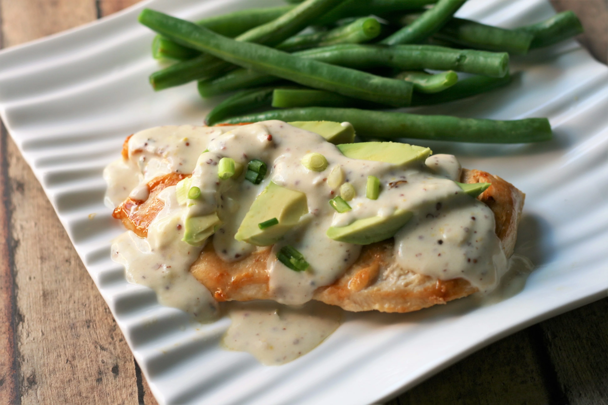

Camembert Chicken

Chicken breast topped with avocado and a yummy cheese sauce. This dish goes well with steamed fresh vegetables.
There is 10 minutes of prep time needed and 20 minutes of cooking time neeeded.
That totals to 30 minutes of time needed for the recipe.
Following this ingredient list will yield 3 servings.
Ingredients
- vegetable cooking spray
- 3 skinless, boneless chicken breast halves
- 2 tablespoons butter
- 1 1/2 tablespoons all-purpose flour
- 1 green onion, chopped
- 3/4 cup milk
- 1 tablespoon coarse grained prepared mustard
- 3 ounces Camembert cheese, cubed
- 1 avocado - peeled, pitted, and sliced
Directions
-
Spray a skillet with cooking spray, and place over medium heat.
Fry chicken breasts in the skill until cooked through, about 20 minutes.
-
While the chicken cooks, melt butter in a small skillet over medium heat, and stir in flour until smooth.
Stir in green onion, and cook, stirring constantly, until the mixture starts to brown.
Gradually mix in milk, and continue cooking and stirring until the sauce is thick and smooth.
Remove from heat, and stir in the mustard and Camembert until melted and smooth.
-
Remove chicken to serving plates, and top with slices of avocado.
Pour sauce over the chicken and serve.